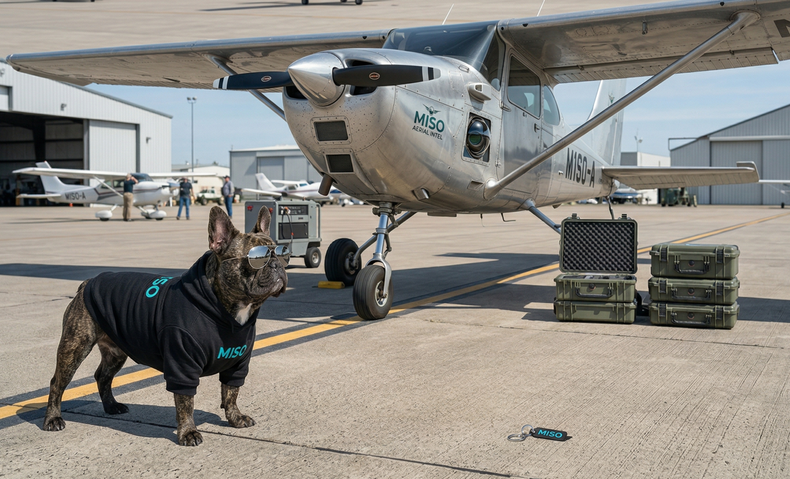

How I Accidentally Built a potenially very successful SAAS Platform in my free time (After Automating My Job)
There’s a special kind of boredom that hits when you automate most of your own job and then still have to show up. That’s roughly where this story begins.
In a previous life, I was a registered land surveyor and due to some unfortunate knee injuries, I decided to take an office based surveying role for an aerial surveying and photogrammetry company. At the time, my “programming experience” consisted of a 20 year old web development diploma I hadn't touched since 2002, some extremely shitty Python scripts and just enough confidence to be dangerous. I definitely didn’t know what an API was. I didn't know what the hell I didn’t know, which, as it turns out, was a lot.
 (redacted) metadata and spatial information overlaid on a Leaflet map
(redacted) metadata and spatial information overlaid on a Leaflet map
I had this brilliant (read: wildly naive) idea: Take raw LiDAR and photogrammetry data for an aerial survey company, convert it into a useable format to display relevant information, and display them on a web map with some filtering. Days, flight conditions, spatial metadata, aircraft information, sensors, simple stuff......? Basically just “a bit of text parsing and a small database displayed on Leaflet.”
Easy, right? …right?
What followed was my first real collision with reality in software development. Suddenly I was dealing with web interfaces, mapping libraries, data structures, performance issues, and an endless stream of “why doesn’t this work?” moments at 11pm. This was all before the automation process of uploading these flights automatically into an Azure function. I didn't even know what Azure was at this point, give me a break, it's been a very long 10 years or so....
Somewhere along the way, a colleague colloquially known to me as “Mad Dog” gently (j/k, gentle wasn't ever his style) suggested that maybe Python wasn’t the best tool for what I was trying to build, and guided me into learning his world, at which he is a genuis: C# and the .NET ecosystem... all while still building the project.
No big deal.
What started as a boredom project turned into something far bigger. I worked late into the night, literally pulling out archived dusty old hard drives from cardboard boxes in their storage shed so I could process it through my parsing software to the shape I needed for the database. The company I worked for had a massive amount of unclassified LiDAR data scattered everywhere, with no real way to track coverage or reuse it. If a new flight was needed, there was almost no way to know if that area had already been captured.
This tool changed that overnight.

Suddenly, teams across the country could see exactly where data existed, how recent it was, and whether it could be reused or sold. Processing, sales, marketing, it touched everything. I started getting calls from people I’d never met to ask for new features or offering to buy me beer at the next Xmas party, and even international interest popped up.
For the first time, they could catalogue, display and correalte their data and visualise it. As you could imagine, this was massive for the sales team.
And the best part?
I built the whole thing in my own time… and open-sourced it.
Which is where it gets weird and made the next part... ummm... interesting.
When management realised what had been created, I was asked if I wanted to sell it. I explained (multiple times) that I’d already given it to them and posted the code to their GitHub under an open license. MIT I think, I dont quite remember. After being approached multiple times to sell it, I just said "hey, I've been working real hard to be a developer, maybe you might have a job for me since this app will require maintaining anyway, and I've essentially automated myself out of the other work I was hired to do"
For some reason, this was seen by HR as some kind of front, and then somehow led to a conversation about legal action and me being sued. I'm still not sure why, lol.
Once HR got involved, they convinced management to direct I.T to take down the site immediately, so they did, all of it, including the database that I'd spent countless hours building from dusty old hard drives. This lead to phonecalls within minutes from people all over the country who were now relying on this site to do there jobs. It was a weird decision and things got awkward.
So I quit.
After I left, a friend of mine said they'd paid two senior contractors to redo the application exactly as I had, and that the project took them over 2 months. Now, I'm not saying that's how good I was at software back then, that code was total dog shit, and it took me a really long time.... but it solved a very relevant problems for the business. I still laugh at the cost they paid and how I was told that no one else was willing to dig into that old storage facility to pull out that old data like I was willing to at 10pm on a Friday night. So the newer application was still missing 10 years of archived data last I heard.
Honestly, I don’t regret any of it.
That project taught me more than any course ever could. It was messy, confusing and stressful, but it was the moment I stopped “dabbling” and started actually building software to solve problems.
With started with boredom… and a wildly underestimated “simple” idea almost ended in legal action, for what, I'm still not even sure, lol.
Shout out to Mad-dog. He's still a friend and a mentor I look up to, even if he's a few years younger than me and totally nuts. But he's awesome. See more about him here.
** And for the record. There was never any leaked data, nothing I used without full permission from my immediate manager and this entire project was openly supported by him **